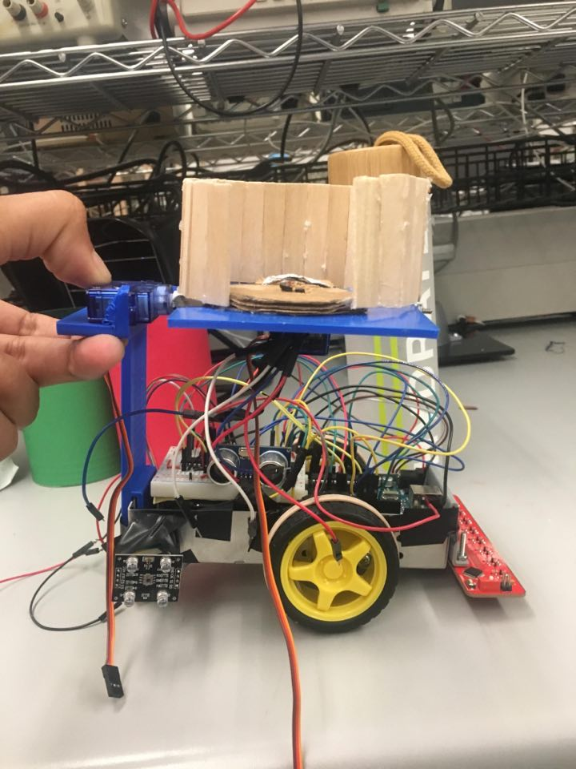
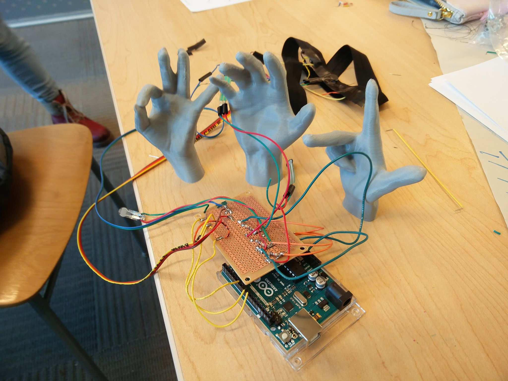
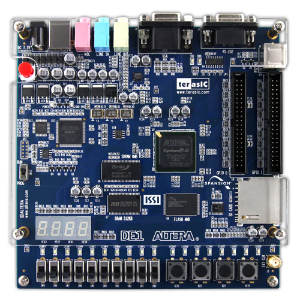

Technical Projects:
 HTML and CSS Blog, Personal Project, April 2020
HTML and CSS Blog, Personal Project, April 2020
- Integrated HTML and CSS to design and create a webpage with multiple links to increase user ability.
 Controls Project, University of British Columbia, October 2019 – November 2019
Controls Project, University of British Columbia, October 2019 – November 2019
- Integrated MATLAB, SimulationX and Simulink to design a control system to move a robotic arm along a predetermined path.
- Combined electrical and mechanical properties to correctly position a robotic arm utilizing PID control and kinematics to reduce error.
- Received a final mark of 95%.
Autonomous Robot, University of British Columbia, May 2019 – June 2019
- Worked in a leadership role to design, prototype, build, and research an autonomous robot to perform a set of commands with an Arduino.
- Programmed multiple sensors in C to command a robot to follow a line, detect objects, sorts materials, and dispose an object of a certain material into a corresponding coloured bin.
Prosthetic Sensor, Hackathon, March 2019
- Researched stakeholder needs in biomedical engineering to implement and present a solution for individuals to regain a modified sense of touch.
- Led a group of 7 interdisciplinary students to design a network of sensors positioned on a hand, applying vibrations to an upper arm when pressure is sensed to simulate touch.
Reduced Instruction Set Computer, University of British Columbia, October 2018 – October 2018
- Used ModelSim and Quartus to design, implement and debug the integration of a finite state machine and instruction decoding to perform simple mathematical operations.
- Worked to add memory in order to store and hold instruction and finally adding branching with Verilog.
 Sobeys Inc, Winnipeg, MB, June 2017/2018 – August 2017/2018
Sobeys Inc, Winnipeg, MB, June 2017/2018 – August 2017/2018